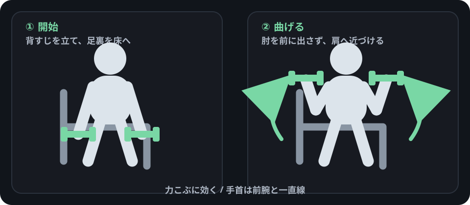
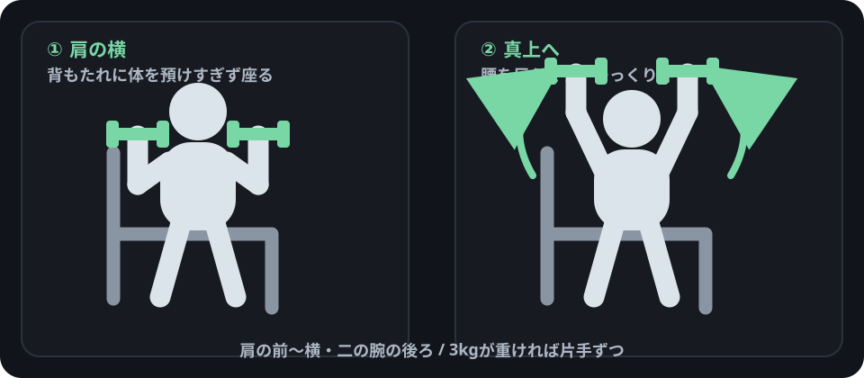
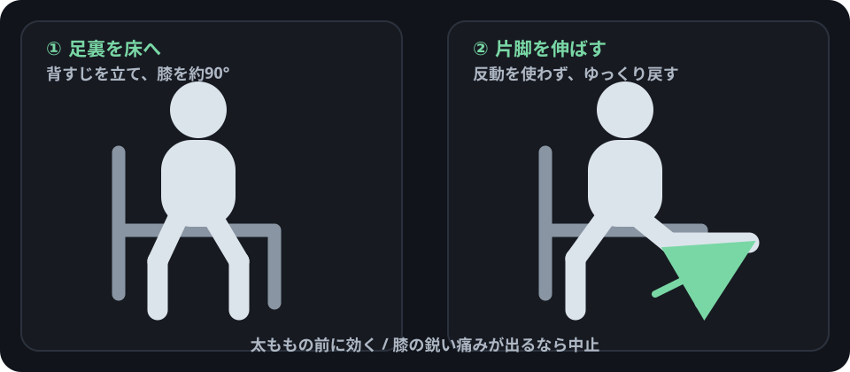
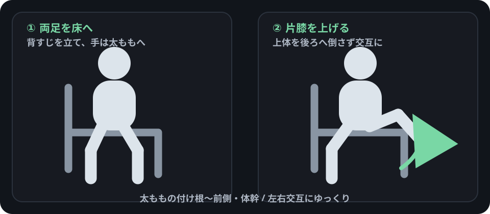

続けてよい感覚
使っている筋肉がじわっと張る、熱くなる、重くなる。最後の数回がきつくなる。
3 KG × 2 / BODYWEIGHT / SEATED
3kgダンベル2個と自重でできる初心者向けガイド。フォーム画像、効いている場所、回数、痛みの見分け方を1ページに整理しています。
BEFORE YOU START
最初にここだけ確認。回数よりフォームを優先し、関節の痛みを我慢して続けません。
使っている筋肉がじわっと張る、熱くなる、重くなる。最後の数回がきつくなる。
手首・肘・肩・膝・腰などの鋭い痛み、ピリッとする痛み、しびれ、強い腫れ。
その場歩き、肩回し、浅いスクワットなどを数分。準備運動だけで疲れるほど強くしません。
持ち手・プレートの大きな割れ、外れそうなガタつき、鋭いサビがある場合は使いません。
翌日に筋肉痛が来なくても、トレーニングが無意味だったとは限りません。
STANDING / 3 KG × 2
肩・腕は3kgでも使いやすく、脚や背中はゆっくり動かすことで負荷を作れます。
図の見方左が開始、右が動かした後。緑のダンベルと矢印を追います。
手首が痛む場合同じ場所が痛む種目は中止。握るときは手首を前腕と一直線に。
力こぶ / 上腕二頭筋

力こぶ（上腕の前側）。後半ほど張る・熱くなる感覚が出やすい。
手首や肘が鋭く痛むなら中止。
肩 / 上腕三頭筋

肩の前〜横・二の腕の後ろ。肩関節そのものが刺すように痛むのは別。
腰が反るなら回数を減らす。
背中 / 肩の後ろ

肩の後ろ〜肩甲骨まわり・上背部。腕の前側も補助で疲れることがあります。
腰が痛むならその場で中止して姿勢を確認。
太もも / お尻

太ももの前・後ろ・お尻。立ち上がる後半で脚とお尻がきつくなります。
膝や腰の鋭い痛みは「効いている」感覚ではありません。
SEATED WORKOUT
床に寝たり、立ち続けたりしたくない日に。ダンベルあり2種目、なし2種目です。
重ければ両手同時にやらず、片手ずつ。
力こぶ / 3kg × 2

力こぶ（上腕の前側）。立位より反動を使いにくい。
手首は前腕と一直線。
肩 / 二の腕 / 3kg × 2

肩の前〜横・二の腕の後ろ。肩関節の鋭い痛みはNG。
3kg×2が重ければ片手ずつ。
テレビや動画を見ながらでもやりやすい脚中心の2種目。
太ももの前

太ももの前。脚を伸ばしたときに前側が固くなる感覚が目安。
膝が鋭く痛むなら中止。
股関節まわり / 太もも / 体幹

太ももの付け根〜前側。姿勢を保つためお腹にも軽く力が入ります。
上体を大きく後ろへ倒さない。
BODYWEIGHT BASICS
画像を大きく見ながら、フォームだけ先に確認します。

頭からかかとまでを1本の板みたいに保ったまま、胸を下げて押し戻す。
胸・二の腕の後ろ。お腹と背中も姿勢を保つために使います。

後ろに椅子があるつもりで、お尻を後ろへ引きながらしゃがむ。
太もも・お尻。回数が増えると脚が重くなる・熱くなる感覚が出やすい。
深さより、かかとが浮かず同じフォームで戻れることを優先。

腰を上げ下げせず、頭・背中・お尻・かかとが一本につながる姿勢をキープ。
お腹まわり・体幹。背中や肩にも姿勢を支える疲れが出ることがあります。
RECOVERY
遅発性筋肉痛（DOMS）は、慣れない運動や強い運動のあと1〜3日ほどして出ることがあります。
軽い張りやだるさで、日常動作とフォームに大きな問題がない。
フォームが保てない、いつもの回数がほとんどできない、筋肉痛が強い。
鋭い痛み、強い腫れ、しびれ、動かせないほどの脱力など。
HOW TO PROGRESS
重量をすぐ買い替えなくても、まず回数と動作速度で少し難しくできます。
フォームが崩れず余裕なら、まず1〜3回ずつ増やします。
2〜3秒かけて下ろすだけでも、3kgの負荷を感じやすくなります。
回数・セット数・動作速度を一度に全部増やさず、1つずつ調整します。
このサイトは一般的な運動情報であり、個別の診断・治療・リハビリの指示を目的としたものではありません。